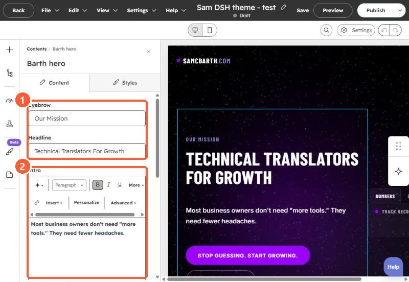

Short answer
Anything written straight into a template file is fixed for every page that uses it. The page editor can only change what lives in modules. For our own landing page I moved the copy twice: first into many small dnd_area blocks, each holding a rich text module with the old copy as its default, then into a theme with eight custom modules (content fields, repeaters and style controls) inside one drag and drop area. The second version is easier to edit and to reuse.
1. The problem
Our agency's offer landing page was first built as one coded template with all the copy, images and the form written into the HTML. In the editor there was nothing to click. The copy was baked into the template.
2. First pass: a drag and drop area per block
I rebuilt the template so every copy block, the form and the footer text sat in its own drag and drop area with a rich text or form module. Layout and styling stayed in the template:
<div class="hero-copy">
{% dnd_area "hero_copy" label="Hero copy" %}
{% dnd_section %}
{% dnd_module path="@hubspot/rich_text"
html="<h1>The headline</h1><p>The lead paragraph.</p>" %}
{% end_dnd_module %}
{% end_dnd_section %}
{% end_dnd_area %}
</div>Images got the same treatment with @hubspot/linked_image modules, so each photo became swappable. It worked, but the template ended up with about twenty separately named areas, and editors still had to edit HTML-ish rich text to keep classes like the eyebrow style.
3. Second pass: custom modules in one area
The version we kept is a small theme with eight custom modules (hero, badge strip, pricing cards, checklist, testimonial, comparison cards, form section, footer) and a template whose body is one dnd_area with each module in its own full width section. Each module has plain fields (eyebrow, heading, body, buttons, image) on the Content tab and style controls on the Styles tab. Editors fill in fields instead of editing markup.


4. After the move
- Build a new page from the new template. When we switched, we created a new draft and renamed and moved the old draft to a new slug, rather than reworking the old page.
- Click every block in the editor. If something does not select, it is still in the template.
- Decide what should stay fixed. Our first pass kept the logo in the template on purpose.
If editors also need to change fonts per block, see module font controls that win over the theme.